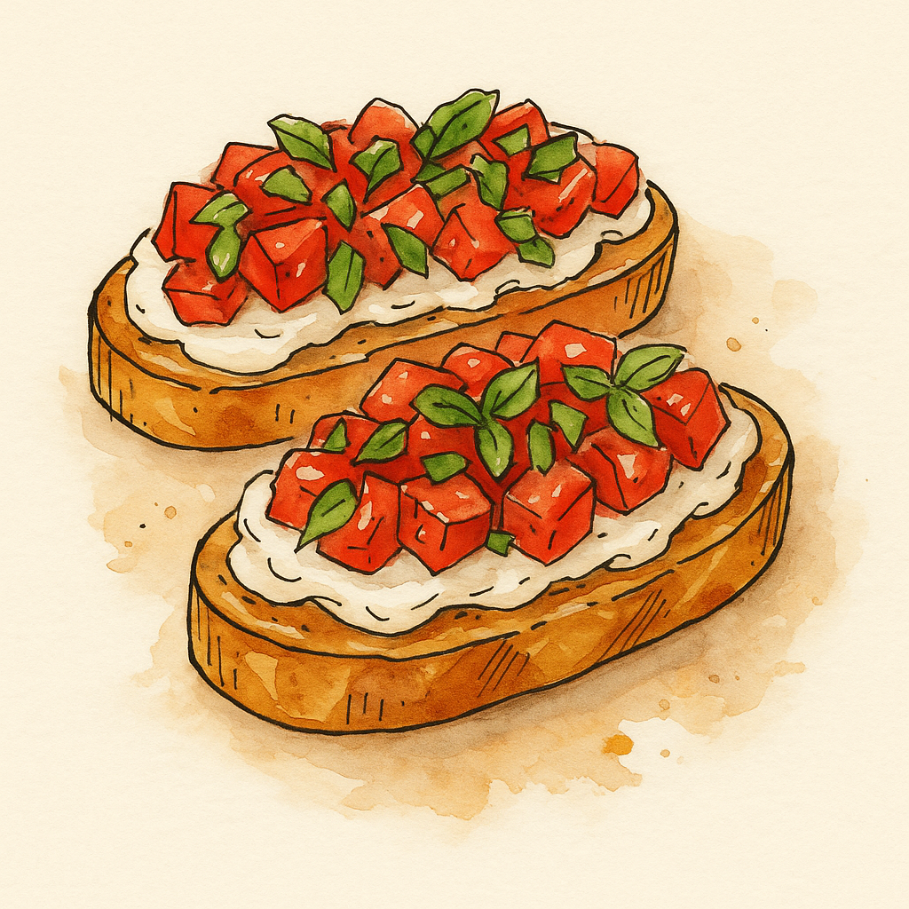

Tomato & Lemon Ricotta Bruschetta

Description:
A summery, vibrant starter featuring creamy lemon-zested ricotta and juicy tomatoes on crisp sourdough. Simple, bright, and perfectly balanced between sweet, tangy, and salty.
Ingredients (Serves 2-3):
- 150g ricotta
- Zest of ½ lemon
- Salt and black pepper to taste
- 4 slices sourdough or ciabatta, toasted
- 2–3 ripe medium tomatoes, chopped or sliced
- Olive oil, for drizzling
- Optional: fresh basil or oregano leaves, balsamic glaze or crushed pistachios
Steps
- Toast the Bread: Grill or toast the bread slices until golden and slightly charred at the edges.
- Prepare the Ricotta: Mix ricotta with lemon zest, salt, and pepper. Add a touch of olive oil if you'd like it silkier.
- Assemble: Spread lemon ricotta onto toast. Top with chopped or sliced tomatoes. Season tomatoes lightly with salt and pepper.
- Finish: Drizzle with olive oil. Optionally garnish with herbs or balsamic glaze.
Home